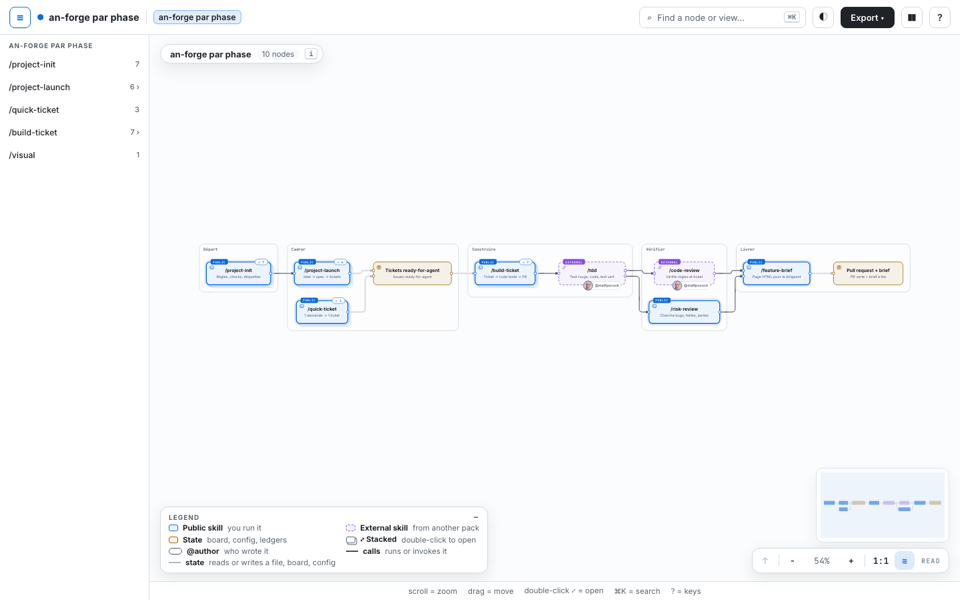
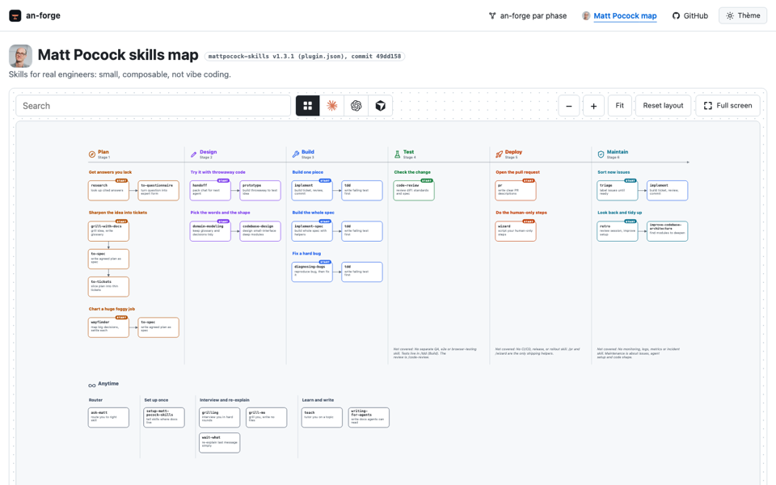

Cartes d'an-forge
Une demande entre d'un côté, une pull request prête à merger sort de l'autre. Ces cartes montrent le chemin, skill par skill.

an-forge par phase
Le départ, les deux chemins (une idée ou une petite demande), puis chaque phase : cadrer, construire, vérifier, livrer. Double-clic sur un skill pour son détail.
Ouvrir →
Matt Pocock skills map
Tous les skills de Matt Pocock, dont an-forge reprend une partie. Carte d'Eric Tech (super-board, MIT).
Ouvrir →